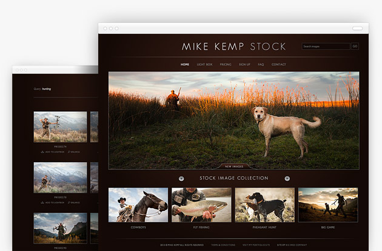
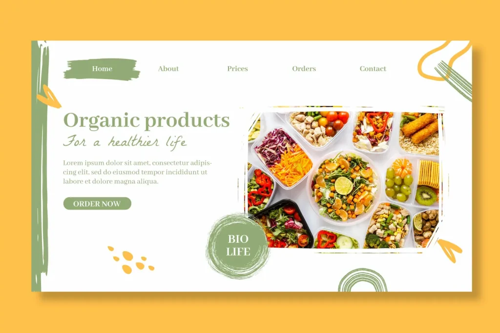
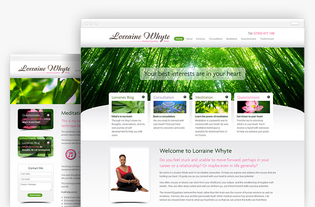

I am a passionate web developer with expertise in creating dynamic and responsive websites. With a background in HTML, CSS, JavaScript, and React, I’ve developed and contributed to various web projects that prioritize user experience and functionality. My journey in web development has been marked by a commitment to staying current with industry trends and technologies, leading me to work on a diverse range of projects. I have hands-on experience with Webflow, enabling me to build visually appealing and interactive web applications. My approach to development focuses on combining technical skills with a deep understanding of design principles to deliver high-quality, user-centric solutions.
Explore a stunning collection of professional stock images covering various themes such as wildlife, outdoor activities, and nature. Offering high-quality images for personal or commercial use.
Discover a range of fresh, organic food products designed to support a healthy lifestyle. Shop from a variety of wholesome meals and snacks, carefully curated for better nutrition.
Offering personalized wellness coaching, meditation sessions, and life guidance, Loraine Whyte helps individuals achieve inner peace and emotional clarity through mindful practices.
